FUEditor 使用文档
简介
FUEditor 是一款高效便捷的AR人脸道具编辑工具软件，为Faceunity公司的Nama SDK提供支持。
- 可以高效制作2D道具。贴纸，贴纸动画，动画组，特定脸部动作触发动画。Faceunity的2D贴纸技术本质也是3D的，有前后景深效果，侧脸时仍能紧贴人脸，而不是全部贴纸都在一个平面上。
- 可以制作AR Mesh面具。
- 可以制作3D的道具，调整材质，如花环头盔等。

1. 快速安装
- 系统要求
- win7/8/10 64位电脑
- 摄像头，推荐使用 Logitech C920
- FUEditor无须安装可直接使用，将FUEditor.zip解压到系统适当位置。
- 目录结构解释
+FUEdittor\ //FUEditor根目录 -FUEditor.bat //双击点击，启动FUEditor +bins\ //FUEditor程序库 +data\ //FUEditor数据目录 +log\ //FUEditor运行日志 +Projects\ //所有道具项目的目录 +daoju1\ //道具“daoju1”项目目录 -daoju1.fuproj //道具项目“daoju1”工程文件 +build\ //已签名道具bundle（测试证书） +release\ //已签名道具bundle（正式证书） +zip\ //未签名压缩包 +fcopy\ //自定义内容目录，用于自定义脚本 +out\ //临时文件 +daoju2 //道具“daoju2”项目目录 -daoju2.fuproj //道具项目“daoju2”工程文件 ... +daoju3 //道具“daoju3”项目目录 ... - 启动程序
双击 FUEditor 目录中 FUEditor.bat 启动程序。显示最近项目列表，可以选择以前的项目，也可以新建项目。
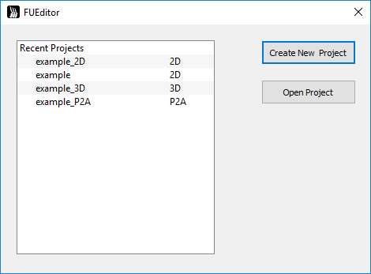
- 查看example
FUEditor中自带一些示例项目，首次启动时，显示的项目即是示例项目，在最近项目列表中鼠标左键选择打开‘example_2D’项目。
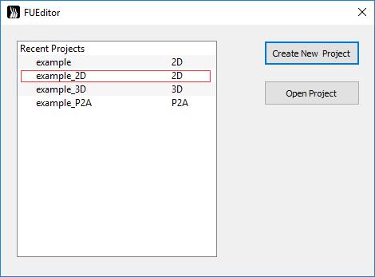
进入示例项目，点击按钮启动摄像头，点击开始预览。
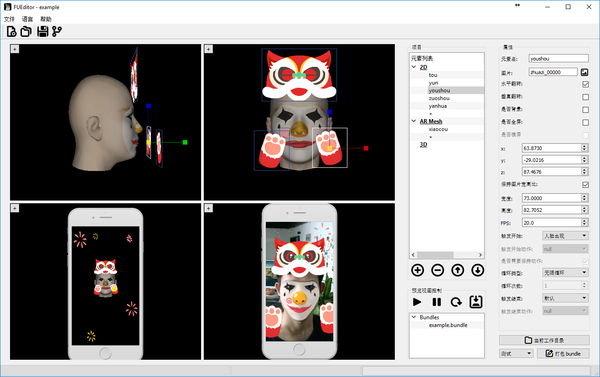
2. 使用
2.1 新建项目
- 创建：点击菜单__File__>>New Project，或者快捷键__Ctrl+N__，或者点击左上边按钮。弹出对话框，选择创建项目类型，输入项目名称
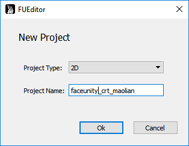
创建完新项目后，界面左上角会显示__FUEditor – 项目名__，项目存放在 FUEditor/Projects/项目名/ 目录下。
注意：所有道具项目存放在 FUEditor/Projects 目录下，新建项目时不要重名。道具名称命名最好以“公司名缩写_设计师名缩写_道具名”规范来命名，如“fu_crt_maolian”。道具名最好不要和之前的一样，否则会覆盖掉之前打包好的道具。
FUEditor/Projects 目录下由程序创建的目录不要随意动。
2.2 2D道具编辑
- 添加：点击2D类型下”+“号创建新的元素；或者在”2D“上右键选择”添加子元素“；或者选中”2D“，点击下面按钮添加新元素。
- 删除：点击删除当前选中的元素。或者在元素上点右键，选择”删除“。
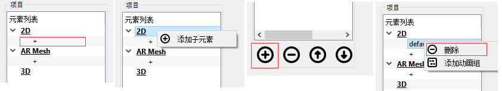
- 2D元素属性：
修改查看元素的属性，在视窗中选择道具元素，或者再树状元素列表中选择元素，右边会显示对应的元素属性视图
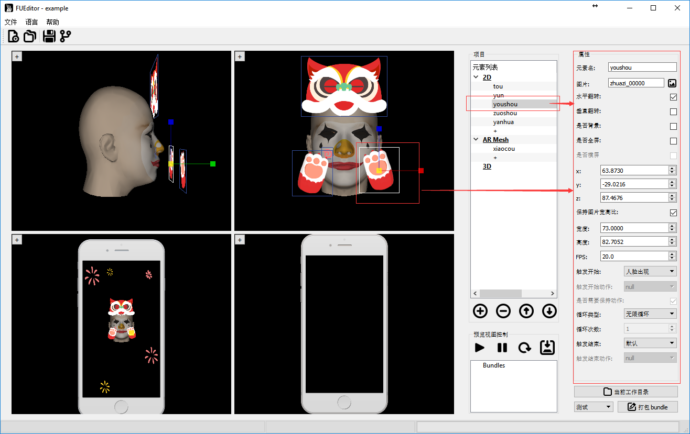
- 属性释意：
- 元素名：当前元素的名称，可修改，不同元素元素名不同。
- 图片：点击右边图片按钮，选择图片纹理。
注意：2D元素帧动画序列命名必须是“xxxx_五位数字.扩展名” 例如， xxxx_00000.png, xxxx_00001.png 帧序列。
即使没有帧动画，只有一帧也需命名为xxxx_00000.png。 - 水平翻转：沿元素中心做水平翻转。
- 垂直翻转：沿元素中心做垂直翻转。
- 是否背景：背景元素，不会跟人脸动，不拉伸，直接绘制在屏幕。不同屏幕分辨率按照(rx,ry)在屏幕上绘制元素，(rx,ry)表示元素中心在屏幕上的比例，左上角为(0,0),右下角为(1,1)。
- 是否全屏：全屏元素，不会跟人脸动，拉伸绘制在全屏幕。
- 是否横屏：全屏元素，且为横屏模式，不会跟人脸动，拉伸绘制在全屏幕。参见[横屏支持]章节。
- xyz：元素的位置，可直接输入；也可以在窗口中拖动，鼠标放到坐标轴上，按住鼠标左键拖动即可。
- 保持图片宽高比：勾选，让元素保持原来图片的宽高比约束，调整宽或高会自动调整另一个值。取消后可自由调整宽高。
- 宽度：元素宽度。
- 高度：元素高度。
- FPS：播放帧速率，每秒播放多少帧。
- 触发开始：当前道具从什么时候开始绘制。
- 触发开始动作：当前道具在什么人脸表情动作下触发时开始绘制。
- 是否需要保持动作：勾选时，且触发开始为“特定人脸表情动作”时，需要人脸保持某一动作，才能持续绘制道具元素。
- 循环类型：当前道具的循环播放类型。
- 触发结束：但特定条件满足时，结束当前道具元素绘制。
-
触发结束动作：当前道具在什么人脸表情动作下触发时停止绘制。
注 1：具体动画逻辑参见动画逻辑章节
注 2：背景元素以及全屏元素，在道具加载时就固定了方向，如要调整方向需要，需要在代码中调整旋转角度，调用
/* / 第一个参数为bundleid，最后参数为旋转度数 0，90，180，270。 / 每加90度相当于逆时针旋转90度。 */ fuItemSetParamd(item_id, "rotationAngle",90); eg. fuItemSetParamd(item_id, "rotationAngle",90);//Android 前置 fuItemSetParamd(item_id, "rotationAngle",270);//Android 后置 fuItemSetParamd(item_id, "rotationAngle",0);//非Android 平台 -
横屏支持：
2D属性”是否横屏“选择，只适用于全屏元素，勾选后。
在预览区，点击鼠标右键，在弹出框中选择横屏预览。
注：一旦预览框选择对应的预览模式后，跟预览框模式不一样的全屏元素将不显示，仅仅是不显示，切换模式后将重新显示，打包正常。
注：程序使用时，在加载道具后，默认竖屏模式，但需要切换横屏时，需要调用代码
fuItemSetParamd(item_id, "isLandscape",1); //第一个参数为bundleid，最后参数 0-竖屏 ，1-横屏。
正视图/左视图/自由视图预览：
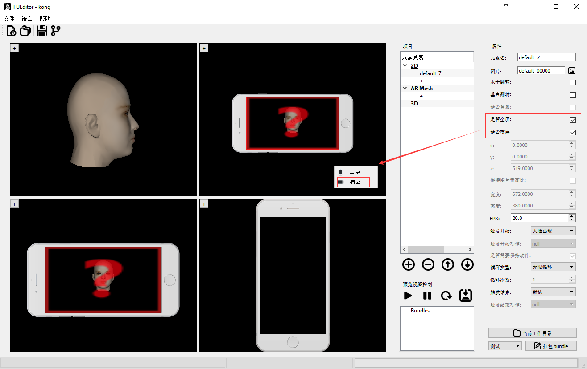
FUEditor中实时预览：
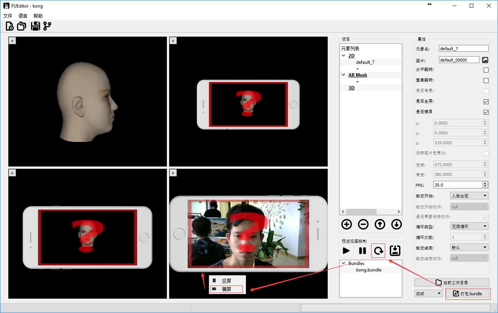
2.3 2D动画逻辑
单个元素，表示道具包中可编辑的最小单元。以下按照”触发开始“不同类型分类，描述各种不同条件下的动画逻辑。
- 触发开始 - 人脸出现：在出现人脸的时候，开始绘制元素，适用于需要人脸的元素。【当 “触发结束” 或者 “循环类型” 触发了结束后，暂时结束道具绘制，不管是否有人脸，当再次出现人脸时（有->无->有），再次绘制道具】。
- 触发结束 - 默认：正常按照循环类型进行绘制。
- 循环类型 - 无限循环：则一直绘制该元素直到人脸消失，人脸出现时又重新绘制。
- 循环类型 - 循环N次：循环绘制该元素N次(循环N次)，N 次后停止 该绘制该元素，暂停该道具。
- 循环类型 - 循环1次并停留：播放道具一个循环后，停在最后一帧。
- 触发结束 - 人脸出现：【未定义操作】
- 触发结束 - 屏幕初始化：【未定义操作】
- 触发结束 - 特定脸部动作：按循环类型进行绘制，如触发特定脸部动作,停止当前元素，暂停该道具。
- 循环类型 - 无限循环：则一直绘制该元素直到人脸消失。
- 循环类型 - 循环N次：循环绘制该元素N次(循环N次)，N次后停止该绘制该元素，暂停该道具。
- 循环类型 - 循环1次并停留：播放该元素一个循环后，停在最后一帧。
- 触发开始 - 屏幕初始化：道具加载后，立即绘制，无须人脸出现，适用于一些全屏或背景元素。【当 “触发结束” 或者 “循环类型” 触发了结束后，暂时结束道具绘制，不管是否有人脸。再次从有人脸到无人脸时（有/无->有-> 无），再次绘制道具】
- 触发结束 - 默认：无特殊触发条件，按照循环类型逻辑。
- 循环类型 - 无限循环：一直绘制该元素，无论人脸有无。
- 循环类型 - 循环N次： 循环绘制该元素N次(循环N次)，N次后停止该绘制该元素，暂停绘制，等待下次有脸到无脸的切换。
- 循环类型 - 循环1次并停留：播放道具一个循环后，停在最后一帧。
- 触发结束 - 人脸出现：当人脸出现时，暂停绘制，等待下次有脸到无 脸的切换。当没有人脸出现时，按照循环类型控制逻辑。
- 触发结束 - 屏幕初始化【未定义操作】
-
触发结束 - 特定脸部动作：当出现特定人脸动作时，暂停绘制，等待下次 有脸到无脸的切换。当没有人脸出现时，按照循环类型控制逻辑。
-
触发开始 - 特定脸部动作：道具加载后，需等特定人脸动作FaceActtionStart出现才触发元素绘制。适用于一些与人脸表情动作相关的元素。
- 是否需要保持动作 选项：优先判断条件，当勾选时，人脸需要一直做着”触发开始动作”动作，才能保持元素绘制；不勾选时只要做一次”触发开始动作”触发，便开始绘制元素，开始绘制后，逻辑按循环类型以及触发结束来。
- 触发结束 - 默认：无特殊触发条件，按__是否需要保持__特定脸部动作优先条件判断是否绘制。如绘制按照循环类型逻辑。
- 循环类型 - 无限循环：一直绘制该元素。
- 循环类型 - 循环N次：循环绘制该元素N次(循环N次)，N次后停止该绘制该元素。当脸部动作”触发开始动作”再次被触发时，能够再次绘制。
- 循环类型 - 循环1次并停留：播放道具一个循环后，停在最后一帧。
- 触发结束 - 人脸出现【未定义操作】
- 触发结束 - 屏幕初始化【未定义操作】
- 触发结束 - 特定脸部动作，当出现特定人脸动作特定脸部动作End时，停止绘制元素，当脸部动作FaceActtionStart再次被触发时，再次绘制。当没有特定人脸特定脸部动作End出现时，按needtokeep特定脸部动作优先条件判断是否绘制，如果绘制按照循环类型控制逻辑。
2.4 特定脸部动作
当道具元素选择触发开始类型为：”特定脸部动作”，然后在触发开始动作列表中选择一个动作，能够根据人脸的特定表情触发元素播放。
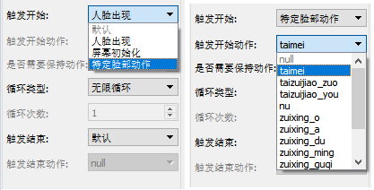
2.4.1 内置特定动作
- “taimei” 是判断用户 抬眉毛的动作
- “taizuijiao_zuo”是判断用户 抬左边嘴角的动作
- “taizuijiao_you”是判断用户 抬右边嘴角的动作
- “nu”是判断用户 怒的动作
- “zuixing_o” 为嘴型O形
- “zuixing_a” 为嘴型A形
- “zuixing_du” 为嘴型嘟嘴形状
- “zuixing_min” 为嘴型抿嘴形状
- “zuixing_guqi” 为嘴型鼓气形状
- “biyan_zuo” 为闭左眼
- “biyan_you” 为闭右眼
- “zhuantou_zuo” 为头往左边转
- “zhuantou_you” 为头往右边转
2.4.2 自定义脸部动作
其中 “触发开始动作” 用户可以自定义。定义动作的文件为FUEditor/data/tools/actions.json。文件内容如下，是一个json文件，actions是一个数组，定义了上面图中所示的动作列表，每一个动作有name属性，name最终会显示在界面上。condition属性为具体判断条件，这里的condition是js脚本的条件语句。params.expression数长度为46，对应的46个表情通道，具体对应《Blendshape制作教程》。
例如
{
"actions": [
{
"name": "taimei",
"condition": "params.expression[16] >= 0.4 || params.expression[17] >= 0.4 || params.expression[18] >= 0.4"
},
{
"name": "taizuijiao_zuo",
"condition": "params.expression[24] >= 0.4 || params.expression[28] >= 0.4"
},
………..
]
}
2.5 组动画
2.5.1 添加组动画
创建组：
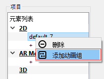
创建子元素：

2.5.2 元素组构成
元素组由组的根节点以及组内元素构成：
- 组的根节点，控制该组动画逻辑，组的动画逻辑如上定义单个元素的控制逻辑。
- 组内元素，只能设置在当前组内循环次数N，循环结束后，开始组内下一节点的动画。
- 组内最后一个元素，可以设置在当前组内循环次数N，循环结束后重新进入根节点逻辑；也可以设置为”无限循环”，这样前面的元素播放完后，开始无限循环最后一个，例入一群蝴蝶往头上飞，到头上后停在头上煽动翅膀，飞动画播放一次，停下来煽动无限循环。
2.5.3 调整组元素顺序
组动画的播放顺序由在元素列表先后顺序决定，点击右键可以调整元素前后关系
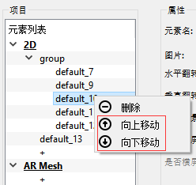
3. AR Mesh 制作
AR Mesh 是拟合人脸的一个3D的mesh, 当需要制作”面具”，可以使用该功能。
- 创建：点击列表中”AR Mesh”下”+”创建新的元素。
- 删除：右键点击”删除”删除当前选中的元素。
- 调整：可以通过右键调整元素的先后顺序。
注：支持多层 AR mesh，前后关系由在序列中先后顺序决定。
AR Mesh 纹理制作方法：
- 方法一：可以使用 FUEditor/data/ref/ar_demo3.obj 在 3d max/maya 等工具中进行 UV 映射，制作贴图。
- 方法二：参考 FUEditor/data/ref/ default_ar.png 或 reference_head.png，根据 UV 图 FUEditor/data/ref/ ar-uv.png （半透明可叠加）在 PS 等工具中制作贴图。
4. 静态3D道具制作
Faceunity Nama SDK拥有实时跟踪三维人脸的能力，能够实时推算人脸在相机空间中的坐标以及人头的三维模型。所以可以根据参考人头制作3D道具。obj原模型放在”FUEditor/data/ref/ar_demo3“,制作3D模型时可以参考该模型大小进行制作。首先要制作模型准备素材，再使用FUEditor进行预览打包，以及调整材质。
4.1 道具制作
- 模型制作
根据参考人头obj，在3D Max/Maya等三维建模软件中制作想要的道具,最后导出obj文件。下面以maya为例，
1. 一定要导出材质和组
材质在导出之后肯定是要重新调整过的，但是编辑器仍然需要知道 Maya 里哪些面 绑的材质是一样的，哪些面是不一样的。要不然到编辑器里所有的面就会合到一起， 不能分开调了。组也是一样的道理。
注：一个组内只能使用一个材质。
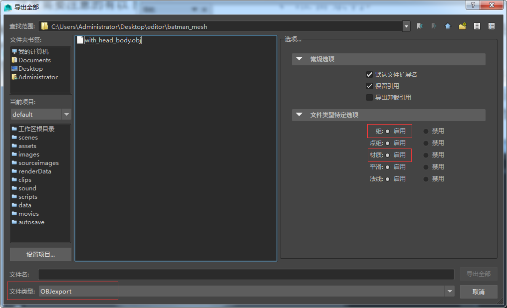
- 一定要对着参考人头调好模型大小，对于道具更要调整好位置
导入参考人头到maya中
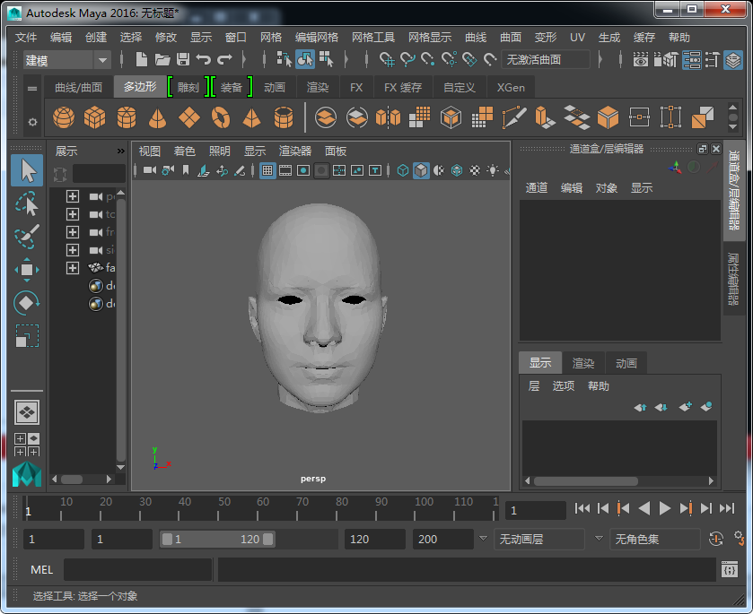
编辑器有一定的位置和大小调整功能，但如果道具小了/大了几十倍上百倍肯定就不行了。
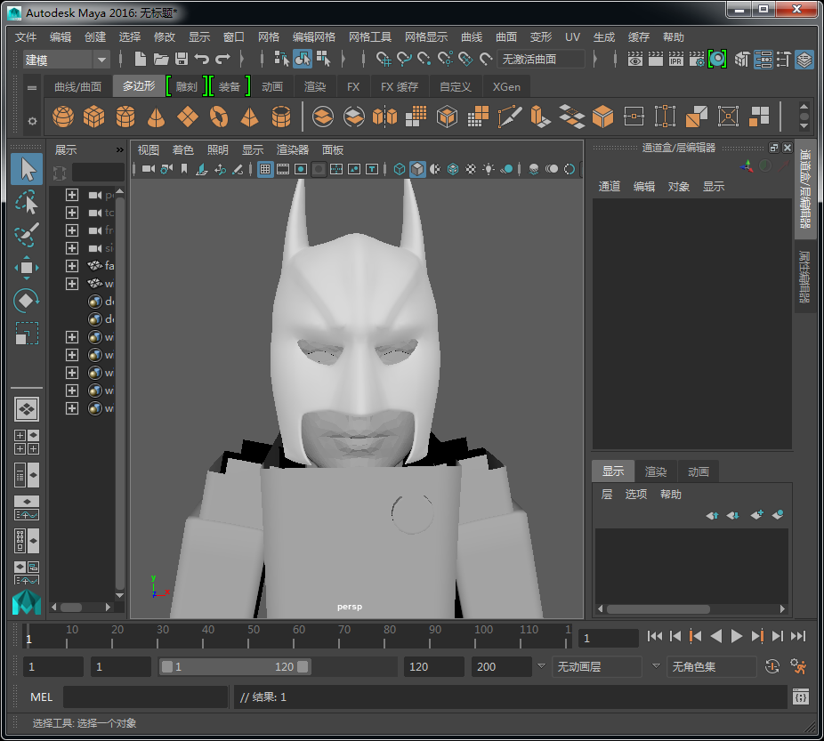
- 创建3D项目
1. 点击创建项目，项目类型选择3D，输入项目名称，点击”OK”创建项目。
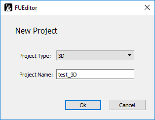
- 创建新的3D元素：在项目”元素列表“中点击”3D“类别下”+“，创建新的3D元素。
- 加载obj：在”属性列表“中，网格项中点击右边按钮，在弹出对话框中选择需要加载的obj。
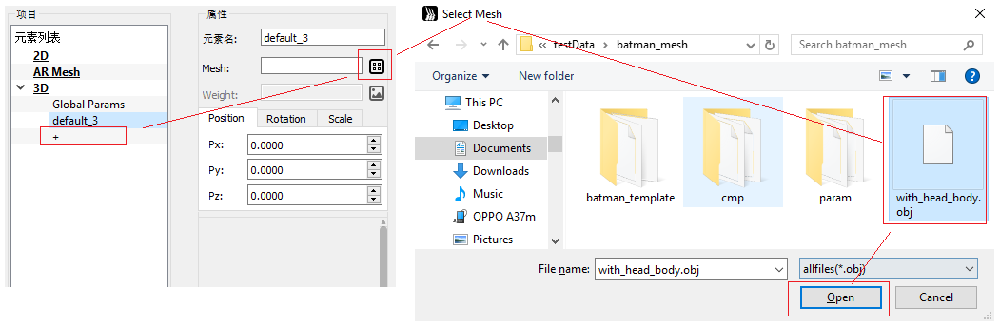
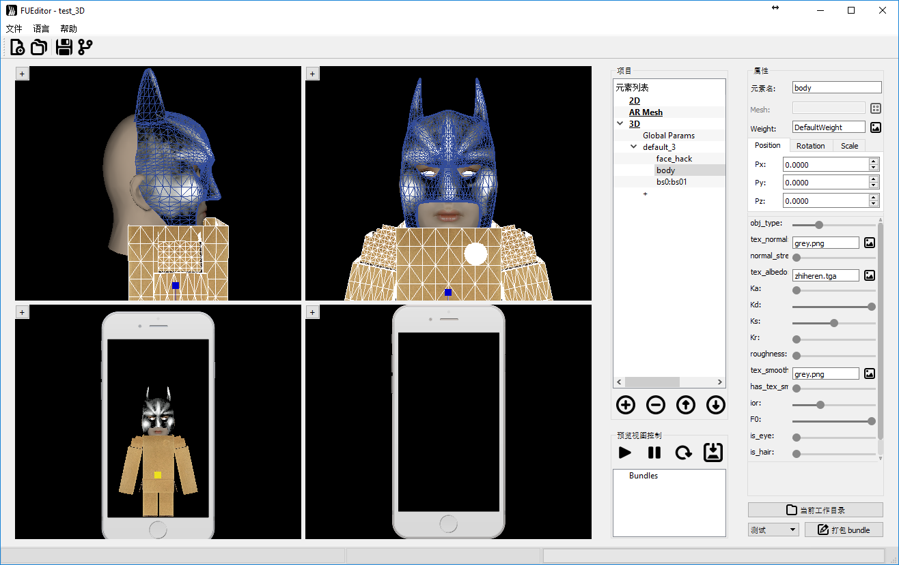
注：在导出的obj的材质mtl，最好也导出贴图信息，并确保路径正确。
4.2 材质调整
FUEditor默认采用”GGX“光照模型。
在预览视图中选择要调整的部件或者在项目列表选择部件。选中右边会显示该部件的属性信息。
在项目列表中选择”Global Params“,右边会显示全局参数属性信息。
- 全局参数
- “tex_light_probe”:环境图
- “envmap_shift”：环境图的旋转角度
- “envmap_fov”: 环境图的视角
- “log_scale”：道具整体缩放的比例，用对数调节是为了方便
- “eyeRscale”：眼球左右旋转的倍率
- “L0_yaw”：主光的航向角，也就是左右转的那个角
- “L0_pitch” 主光的俯仰角，也就是上下转的那个角
- “L0_R”：主光的颜色，R通道
- “L0_G”：主光的颜色，G通道
- “L0_B”：主光的颜色，B通道
- “L0Intensity”: 主光的强度，用对数调还是为了方便
- “L1_yaw”：补光的航向角，也就是左右转的那个角
- “L1_pitch”：补光的俯仰角，也就是上下转的那个角
- “L1_R”：补光的颜色，R通道
- “L1_G”：补光的颜色，G通道
- “L1_B”：补光的颜色，B通道
- “TexFPS”：贴图动画的帧率，需要子部件的 tex_albedo 选择成动画帧 xxx_00000.png, xxx_00001.png …
- “L1Intensity”: 主光的强度，用对数调还是为了方便
- “alphaThreshold”：半透明算法阈值，设为1.0适合普通简单的半透明物体，设为0.5适合头发。
- 部件材质参数：
- “obj_type”:物体的类型
- 一是镂空[0,0.25]
- 二是会完全随着脑袋旋转和缩放,(0.25,0.5]
- 三是权重控制旋转的幅度（前提是有对应主obj的weight.png,例如aa.obj对应的权重贴图是aa_weight.png）,(0.5,0.75]
- 四是只会跟着脑袋位移变化和大小的缩放，例如身体(0.75,1]。
- “tex_normal”: 法向贴图，就是蓝了吧唧的那种，不是bump map哦～bump map要先转一下哦～～ 默认的grey.png等于没有贴图
- “normal_strength”：法向贴图的强度，为了照顾没有法向贴图的模型，强度默认是0，所以设了法向贴图之后要把强度拽高点才能看到效果
- “tex_albedo”：颜色贴图，会自动加载obj对应材质库mtl中Ka_map，如没有Ka_map,默认的white.png是白的，需要选择部件对应的贴图。如要做出3D贴纸动画，这里tex_albedo选择成动画帧序列的某一帧即可 xxx_00000.png, xxx_00001.png …，命名规范和2D动画帧一致，必须是xxx_00000开始，系统会自动加载所有帧并完成帧动画逻辑。
- “Ka”: 自发光强度
- “Kd”：漫反射强度
- “Ks”：高光强度，注意高光不受颜色贴图影响
- “Kr”：环境图反射强度
- “roughness”：表面粗糙度。越大高光越分散，越小高光越集中
- “tex_smoothness”：高光强度贴图。在alpha通道里放的是影响高光和反射的权重，越大表示越亮。可以和颜色贴图放在一起哦。
- “has_tex_smoothness”：高光强度贴图的整体强度（有些拗口……），为了照顾到大多数没有高光强度贴图的模型，默认是0。设了贴图之后要把强度拽高哦～
- “ior”：环境图反射的折射率。折射率越小，反射从正面到边光的亮度变化越明显，整体强度越小。
- “F0”：高光的金属度。越高越接近金属，越低越接近塑料。
- “is_eye”：是眼睛就拽到右边，不是就拽到左边。是眼睛则会随眼球转动
- “is_hair”：是头发胡子就拽到右边，不是就拽到左边。是头发则会加入透明处理
注：调整材质参数可以分为两种情况：
- 1 当实时预览未开启时，这时调整参数是看不到直接的结果
- 2 在加载完模型，并调整好位置了之后，可以”打包bundle”,并开启实时预览窗口，这个时候，再进行参数调整时，将能够实时的看到调整的结果，最终调整完时，需要重新”打包bundle”,确保调节好的参数能够打包到bundle里面。
4.3 贴图动画
FUEditor 3D道具支持循环贴图动画，类似于2D贴纸动画，可以创建一些贴合脸部的3D模型，并使用贴纸动画，使得贴纸动画更具立体感。
在预览视图中选择要调整的部件或者在项目列表选择部件。选中右边会显示该部件的属性信息。
在项目列表中选择”Global Params“,右边会显示全局参数属性信息。
- 全局参数
- “TexFPS”：贴图动画的帧率
- 部件材质参数：
- “tex_albedo”：颜色贴图，会自动加载obj对应材质库mtl中Ka_map，如没有Ka_map,默认的white.png是白的，需要选择部件对应的贴图。如要做出3D贴纸动画，这里tex_albedo选择成动画帧序列的某一帧即可 xxx_00000.png, xxx_00001.png …，命名规范和2D动画帧一致，必须是xxx_00000开始，系统会自动加载所有帧并完成帧动画逻辑，而3D贴纸帧序列可以UV展开绘制。
5. Avatar制作
Avatar指的是3D模型，且脸部有跟Nama SDK一致的Blendshape/Morpher，能够被Nama SDK驱动，进行脸部动画跟踪的模型。
- 与静态3D道具相异之处：需要一组blendshape obj。
- obj的命名规范，每个表情对应一个obj（命名为__bsx.obj__，x为序列号），可以只做其中的一部分，如下图所示：
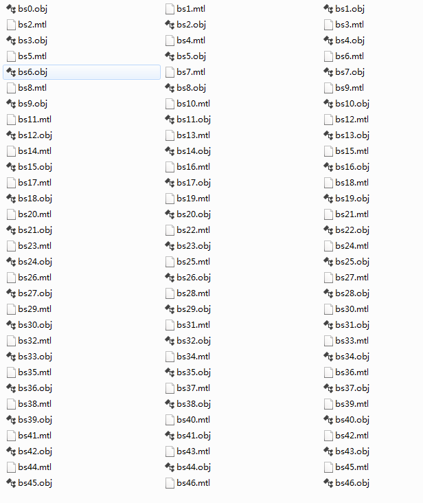
其中 bs0.obj 是自然表情。拓扑结构需要保证这些obj的顶点顺序、面顺序、人头位置都是一样的。”FUEditor/data/doc/blendshape_guide” 目录下脚本 exportObj.mel 可以帮助把maya的blendshape导出成obj文件。如果使用这个script，需要保证每个blendshape表情的名字规范为*bs0.obj、*bs1.obj、*bs2.obj、*bs3.obj、…、*bs46.obj。
- 导入avatar模型的步骤：启动FUEditor.exe，创建3D项目，点击加载模型网格，选择 bs0.obj 导入，剩下的obj工具会自动加载进去。注意：必须选择 bs0.obj。
- 制作blendshape时需要注意：自然表情保持全部肌肉放松，不要有笑容等表情变化；其他表情需要在自然表情的基础上修改，只修改需要的部分即可，例如制作闭左眼的表情，右眼等其他部分要与自然表情完全相同。
- 自然表情和46种表情，参见”FUEditor/data/doc/blendshape_guide“目录下的 Blendshape_Guide.pdf。
6. 打包道具
道具编辑修改完成后，需要进行打包操作。
2D项目支持2D元素和AR Mesh混合打包。
打包会自动保存项目。
测试打包、正式打包：
- 签名的证书分为两种，测试证书，以及正式证书，测试证书签出来的bundle，有一定时效性，运行一段时间后会消失。而正式证书签名的bundle可以一直运行。
- FUEditor内置了测试证书，通过 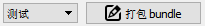 打包出来的bundle即是测试bundle。测试bundle：点击”打包bundle”按钮，等待打包，道具打包后在”FUEditor/Projects/当前道具/build/”目录中。
- 测试打包又可以分为两个过程，一是”测试-生成“,生成过程即是将图片等资源进行转换；一是”测试-签名“，将转换好的资源进行加密打包。当需要修改一些临时脚本时，可以只”测试-生成“一次，多次修改生成的内容并多次”测试-签名“，这样可以节省生成时的耗时。
- 通过 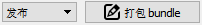 打包出来的bundle即是正式发布bundle，道具打包后在“FUEditor/Projects/当前道具/release/”目录中。
注： 1.正式发布前需要确保测试打包正常。2.正式发布需要__网络连接__，需要正式证书。
- 点击 直接打开当前项目目录。
7. 项目保存与切换
- 点击 ，保存当前项目xxxx，工程文件在Project/xxxx/xxxx.fuproj。保存后可以打开重新读取。
- 点击 ，在弹出的对话框中输入新项目名xxxx2，点击确认另存为。当前的项目会另存为到Project/xxxx2下，同时切换到新的项目上工作，左上角显示FUEditor-xxxx2。
- 点击在Projects目录中选择要打开的项目，最后选择xxx__.fuproj__文件打开，如下图
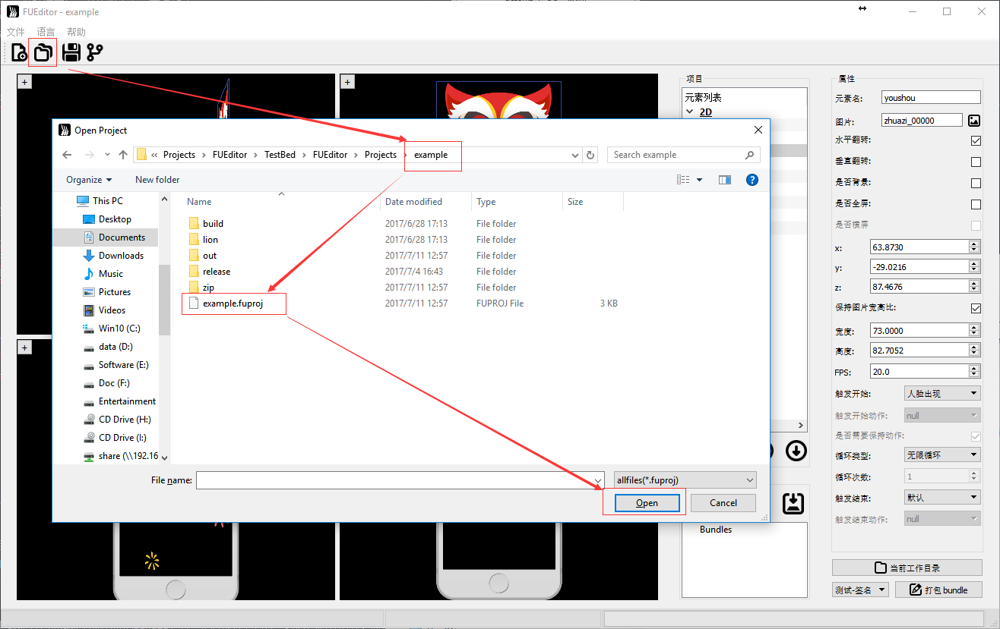
8. 高级功能自定义动画脚本
编辑完道具后，选择”测试”并点击”打包bundle”，FUEditor开始打包测试用的bundle，并且，会在”out“目录下生成待打包的资源，包括script.js。script.js是控制道具动画的逻辑。可以通过修改script.js能高度自定义道具动画。当需要进行脚本修改，或者添加其他资源文件时。可以在项目的”fcopy“中放置需要添加的文件，以后每次打包(测试/发布)时，FUEditor会主动将”fcopy“目录下的文件拷贝或者覆盖到”out“目录中，并最终打包到bundle内。
9. 常用术语解释
- 道具项目：表示用户创建的每一个道具工程，项目存放在 FUEditor/Projects/项目名/ 目录下。
- 元素：元素表示由用户创建的每一个道具部件，如2D项目的一个矩形片，一张AR Mesh，一个3D部件。
- bundle/item：生成资源，经过zip压缩后，再进行签名加密得到的文件。后缀名为.bundle
- 测试证书签名、正式证书签名:
- 签名的证书分为两种，测试证书，以及正式证书，测试证书签出来的bundle，有一定时效性，运行一段时间后会消失,测试包的使用时间一般为两分钟左右，之后会导致人脸识别失败并报“debug key used, 100 frames remaining，debug key or authentication failed, rendering stopped”之类的错误。。而正式证书签名的bundle可以一直运行。
- FUEditor内置了测试证书，通过打包出来的bundle即是测试bundle。
- 通过打包出来的bundle即是正式发布bundle。当软件交付给客户时，同时会给客户一个唯一的证书，请将证书放到 “FUEditor/data/license/”目录下，并命名为”license.p12“，用于发布道具。
注意1: 打包发布bundle时，该功能只进行签名，不会进行内容生成。因此，需要通过打包以后，确认无误后，在进行发布打包。
注意2: 该证书是客户身份的证明，每个公司客户都有一个不同的证书，不同的客户证书不同。不得将该证书转给其他公司使用，如有，经监控发现，将永久吊销证书。 - 参考人头：Faceunity Nama SDK拥有实时跟踪三维人脸的能力，能够实时推算人脸在相机空间中的坐标以及人头的三维模型。FUEditor中内置的参考人头模型，即是最后实时跟踪时人头的大小。obj原模型放在”FUEditor/data/ref/ar_demo3“,制作3D模型时可以参考该模型大小进行制作。
- Avatar:avatar指的是3D模型，且脸部有跟Nama SDK一致的Blendshape，能够被Nama SDK驱动，进行脸部动画跟踪的模型。
- Blendshape/Morpher:表情融合模型，在3ds Max中称morpher，maya中称blendshape。计算公式如下：
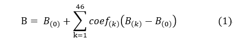
其中，Bk是指每一个blendshape，B0是指自然基表情，coef是指有Nama SDK提供的每一帧视频提取出来46个表情系数。